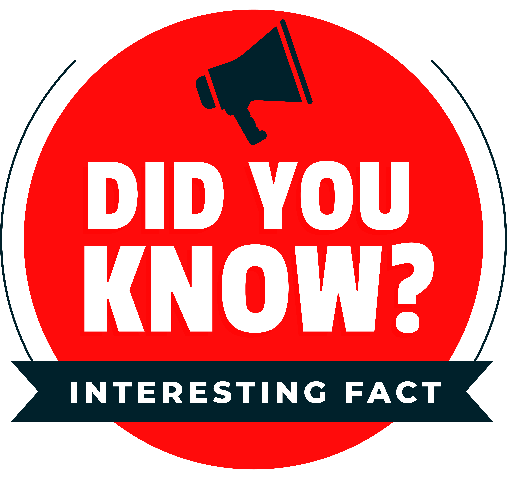

Canon began as the Precision Optical Instruments Laboratory. In 1934, the first Japanese 35mm focal plane-shutter camera prototype was made. It was called the "Kwanon". In the next few years, Canon became very important in creating new camera products and making them better.
In 1952 Canon introduced the world's first speed-light synchronized 35mm flash-and-shutter camera. The company opened an office in New York in 1955 and established a distributor in Europe in 1957. -- In the 1960s Canon introduced the world's first 10-key electronic calculator and entered the copying machine market.
